교통기사 (2012-09-15 기출문제)
1과목: 교통계획
1. 두 결절점을 연결하는 두 구간(link) a와 b의 교통망 균형 노선 배정체계다. Ca(x)와 Cb(x)는 구간 a와 b의 평균 통행비용 함수이고, ma(x)와 mb(x)는 한계 통행비용 함수 일 때, 이용자 최적노선 배정 시 두 구간 a와 b의 균형 통행량(
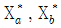
)은? (단, ta와 tb는 구간별 통행비용이며, xa와 xb는 각 구간의 통행량이다.)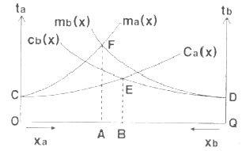
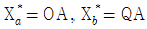
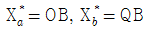
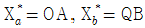
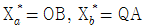
(정답률: 74%)

2. 어느 도심지의 피크시 한 시간당 주차요금이 3000원 일 때 주차수요는 10000대이고, 주차요금에 대한 수요탄력치가 -0.2 이다. 만일 주차요금이 25% 인상될 때 수요의 감소량은 얼마인가?
- 250대
- 500대
- 750대
- 1000대
(정답률: 56%)
3. 교통혼잡을 감안한 주행시간함수를 이용하여 최단 경로에 교통량을 배정하는 방법은?
- 평균성장율법
- 전환율 곡선법
- 카테고리분석법
- 용량제약 노선 배정법
(정답률: 83%)
4. 소득이나 자동차보유대수 등의 설명변수의 범주에 따라 교차 분류시켜 가구당 통행발생량을 추정해내는 모형은?
- 회귀분석법
- 원단위법
- 증감율법
- 카테고리분석법
(정답률: 83%)
5. 다음 중 교통의 기능으로 옳지 않은 것은?
- 승객과 화물을 일정한 시간에 목적지까지 운송시킨다.
- 도시화를 촉진시키고, 대도시와 주변도시를 유기적으로 연결시켜 준다.
- 산업활동 구조의 변화를 억제하고, 생산비를 높이는데 기여한다.
- 문화 ㆍ 사회활동 및 교육 등의 활동을 수행하는데에 이동성을 부여한다.
(정답률: 82%)
6. 조사지역 내에 하나 혹은 몇 개의 선을 그어 이 선을 통과하는 차량을 조사하여, 조사된 0/D표를 검증하거나 보완화기 위하여 실시하는 것은?
- 교통류 적응 조사
- 스크린라인 조사
- 차량번호판 조사
- 차량재차인원 조사
(정답률: 90%)
7. 통행분포(Trip Distribution) 모형 중 성장률법(growth factor model)에 해당하지 않는 것은?
- 균일성장률법
- 프라타 모형
- 디트로이트 모형
- 중력모델
(정답률: 65%)
8. 다음 중 사람 통행 실태 조사방법에 해당하지 않는 것은?
- 가로변 면담(Roadside Interview)조사
- 운전자 우편설문(Driver Postcards)조사
- 가구방문(Home Interview)조사
- 확률적 배정(Probabilistic Assignment)조사
(정답률: 81%)
9. 4단계 교통 수요 추정법에서 추정된 장래 존간 통행량을 기존 교통망에 부하시킴으로써 기존 교통망에 부하시킴으로써 기존 교통 체계의 문제를 진단하고 여러 가지 교통체계 대안을 검증할 수 있는 단계는?
- 희망노선도(Desire line) 작성 단계
- 통행발생(Trip generation) 단계
- 교통수단선택(Modal split) 단계
- 통행배분(Trip assignment) 단계
(정답률: 59%)
10. 교통존(traffic analysis zone)에 관한 설명으로 틀린 것은?
- 교통존은 두 개 이상의 센트로이드를 가지고 유사한 토지이용이 포함되도록 결정되어야 한다.
- 센트로이드의 위치는 교통존 내부 링크의 접근비용이 유사성을 가질 수 있게 설정되어야 한다.
- 교통존의 경계는 사회경제지표 등 통계자료 수집이 용이하도록 행정구역과 가급적 일치되도록 한다.
- 간선도로가 가급적 존 경계와 일치하도록 한다.
(정답률: 73%)
11. 지하철과 버스에 대한 효용함수 및 통행특성자료가 아래와 같을 때, 로짓모형을 이용한 교통수단별 선택확률이 모두 옳은 것은? (단, 효용함수 V = -0.06(0.5X1 + 0.002X2) 이다.)
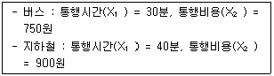
- 버스 : 57.9%, 지하철 : 42.1%
- 버스 : 42.1%, 지하철 : 57.9%
- 버스 : 47.9%, 지하철 : 52.1%
- 버스 : 52.1%, 지하철 : 47.9%
(정답률: 70%)
12. 교통계획의 공간적 범위에 따른 분류에 해당하지않는 것은?
- 지역교통계획
- 간선도로계획
- 도시교통계획
- 지구교통계획
(정답률: 86%)
13. TMS(Transportation System Management)기법에서 교통수요를 억제시키는 방법으로 적합하지 않은 것은?
- 주차제한구역 확대
- 버스전용차로 설치
- 가변차로제 실시
- 자동차 통행제한구역 설치
(정답률: 67%)
14. 다음 교통대안 평가방법 중 성격이 다른 하나는?
- AHP 공법
- 순현재 가치 분석법
- 내부수익률 분석법
- 초기년도 수익률 분석법
(정답률: 80%)
15. 다음 중 주차수요 추정방법이 아닌 것은?
- 원단위법
- P요소법
- 누적주차수요법
- 프라타모델법
(정답률: 79%)
16. 도로를 확장하기 전 교통량은 1일 1만대로 운행비가 대당 200원이었던 것이, 도로의 확장 후 교통량은 1만 5천대, 운행비는 대당 150원으로 감소하였다. 이에 따른 소비자 잉여는?
- 62.5만원
- 125만원
- 437.5만원
- 875만원
(정답률: 58%)
17. 간섭기회모형(intervening opportunity model)에 대한 설명으로 틀린 것은?
- 목적지의 선택은 목적지까지의 상대적 접근성에 의해 결정된다.
- 통행자가 주어진 기회를 선택할 확률은 일정하다.
- 통행자는 자신의 통행비용보다는 전체 통행자의 총 통행비용을 최소화하는 목적지를 선택한다.
- 통행유입량을 그 목적지가 가지는 잠재적인 기회의 크기로 간주한다.
(정답률: 61%)
18. 다음 중 단기교통계획에 비하여 장기교통계획이 갖는 특징에 해당하는 것은?
- 서로 다른 대안
- 시설지향적
- 저자본비용
- 피드백지향적
(정답률: 85%)
19. 버스 승객의 효용함수가 아래와 같을 때, 승객의 1시간 시간가치는 얼마인가?
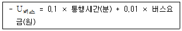
- 6000원
- 7000원
- 8000원
- 9000원
(정답률: 66%)
20. 편익/비용비(B/C)의 값이 얼마일 때 해당 사업이 경제적 타당성이 있다고 보는가?
- 1보다 클 때
- 1보다 작을 때
- 0보다 작을 때
- 할인율과 같을 때
(정답률: 87%)
2과목: 교통공학
21. 차량 V1, V2, V3 의 운행을 보여주는 시공도(Time space diagram)로부터 알 수 없는 것은?
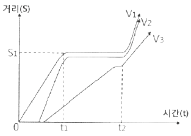
- S1 지점에 신호화된 교차로가 있을 가능성이 있다.
- t1부터 t2 사이에는 이들 차량운행 방향에 적색신호가 있었을 가능성이 있다.
- V3는 적색신호를 위반하고 계속 주행하였다.
- V1과 V2는 차량군을 이루고 있다.
(정답률: 78%)
22. 어느 건물의 주차가능용량이 500대이고 1일 주차 차량이 2500대이며 주차 차량들의 평균주차시간은 2시간이었을 때, 주차장의 주차효율(이용효율)은 얼마인가? (단, 주차개방시간은 20시간으로 한다.)
- 0.5
- 0.87
- 1.52
- 1.82
(정답률: 55%)
23. 속도(U, km/h)와 밀도(K, 대/km)의 관계가 U=55-0.172k일 때, 이 도로 구간의 용량(최대교통류율)은?
- 4400vph
- 5200vph
- 5800vph
- 6000vph
(정답률: 48%)
24. 신호교차로의 포화교통량 산정을 위한 이상적인 조건 기준이 틀린 것은?
- 차로폭 3.0m 이상
- 교통류는 모두 승용차로 구성
- 경사가 없는 접근부
- 접근부 정지선 상류부 100m 이내에 버스정류장이 없음
(정답률: 76%)
25. 평지를 달리던 차량이 35m를 주행한 후 정지하였다. 노면마찰계수가 0.15 이었다면, 차량의 초기속도는 얼마인가?
- 18.5km/h
- 25.8km/h
- 30.2km/h
- 36.5km/h
(정답률: 61%)
26. 2개 집단의 차량속도분포를 나타낸 아래에 대한 설명으로 가장 거리가 먼 것은?
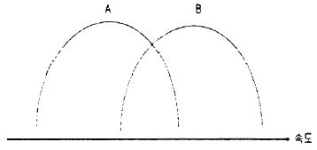
- 분포 A는 분포 B에 비하여 평균속도는 낮다.
- 분포 A와 분포 B의 분산은 유사하다.
- 분포 A와 분포 B는 표준편차가 유사하다.
- 분포 A에 속하는 모든 차량들은 분포 B에 속하는 차량들보다 속도가 낮다.
(정답률: 69%)
27. 한 지점에서의 첨두시간 교통량이 2880대, 첨두 15분 교통량이 800대일 때, 이 지점의 첨두시간계수(PHF)는?
- 0.90
- 0.85
- 0.80
- 0.75
(정답률: 48%)
28. 어느 특정 지점 또는 짧은 구간 내의 순간속도로서, 속도 규제, 신호기 설치 위치 선정, 신호시간계산, 사고분석 등에 이용되는 속도는?
- 주행속도
- 자유속도
- 구간속도
- 지점속도
(정답률: 71%)
29. 한 교차로에서 평균 차량 도착률은 매 분 당 2대 일 때, 1분 동안 2대의 차량이 도착할 확률은? (단, 차량도착은 포아송(Poisson) 분포를 따른다.)
- 0.18
- 0.23
- 0.27
- 0.33
(정답률: 58%)
30. 이동차량조사법에 의하여 3km 구간 도로에 대한 조사결과가 아래와 같을 때, 남쪽에서 북쪽으로 이동하는 교통류의 북방향 평균 속도는?
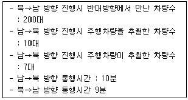
- 약 16.5km/h
- 약 18.5km/h
- 약 31.5km/h
- 약 33.3km/h
(정답률: 25%)
31. 차량검지기에 의해 파악된 교통량에 따라 신축성 있게 신호시간을 조정하며, 교통량의 시간적 변화가 심한 독립교차로에 설치하여 단독으로 운용하는데 적합한 신호기는?
- 정주기식 신호기
- 감응식 신호기
- 차선지정 신호기
- 전자 신호기
(정답률: 83%)
32. 교통량(q), 속도(u), 밀도(k)의 상관관계(q=u × k)에서 속도의 의미는?
- 공간평균속도
- 시간평균속도
- 지점속도
- 설계속도
(정답률: 53%)
33. 어느 도로 구간의 교통량 구성비가 승용차 70%, 트럭 20%, 버스가 10%일 때 도로 용량 산정을 위한 중차량보정계수는? (단, 트럭과 버스의 승용차 환산계수는 각각 1.7, 1.5 다.)
- 0.61
- 0.66
- 0.71
- 0.84
(정답률: 53%)
34. 3현시로 운영되는 신호교차로에서 각 현시별로 고려하여야 하는 현시율이 각각 0.3, 0.15, 0.25 일 때, Webster 방식에 의한 최적신호주기는? (단, 현시당 손실시간은 3초다.)
- 55초
- 62초
- 71초
- 89초
(정답률: 45%)
35. 연속된 신호교차로에서 첫 번째 신호등의 녹색신호시작 시간과 두 번째 신호등의 녹색신호시작시간과의 시간간격을 의미하는 것은?
- 현시(phase)
- 분할비(split)
- 유효녹색시간(effective green time)
- 옵셋(offset)
(정답률: 75%)
36. 양방향 2차로인 장대터널의 한 쪽 방향에서 차량들이 50km/h의 속도로 주행 중이며, 밀도는 25대/km이다. 이 때 승용차 한 대가 고장이 나서 10km/h로 주행을 시작했고 이 상황과 관련한 교통량-밀도가 아래와 같을 때의 내용으로 가장 거리가 먼 것은?
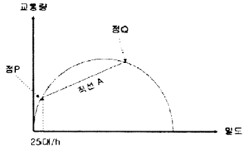
- 원점과 점P를 잇는 가상선의 기울기는 50km/h일 것이다.
- 충격파는 직선A의 기울기이다.
- 터널 내 CCTV로 관측하니 고장난 승용차로 인하여 교통류가 일렬로 줄지어 10km/h로 가는 것이 관찰되었다.
- 터널을 나온 후, 고장난 승용차가 길어깨로 빠져나가자 선두교통류들은 즉시 속도 50km/h, 밀도 25대/km로 복귀하였다.
(정답률: 72%)
37. 신호주기가 140초로 운영되는 신호교차로에서 세개의 전용차로를 이용하는 북향 직진에 할당된 유효녹색시간은 35초, 교통량이 1200대/시 일 때 해당 직진 움직임의 포화도는? (단, 해당 움직임의 포화차두간격은 2초다.)
- 0.75
- 0.81
- 0.89
- 0.93
(정답률: 23%)
38. 교통량과 밀도에 대한 설명이 틀린 것은?
- 밀도의 증가에 따라 교통량은 증가 후 감소한다.
- 밀도와 교통량은 일반적으로 상관관계가 없다.
- 모든 움직임이 정지된 상태의 밀도를 혼잡밀도(jam density)라 한다
- 미로는 차두거리(spacing)의 역수에 비례한다.
(정답률: 75%)
39. 신호교차로에서 보행자의 횡단에 필요한 시간을 고려한 최소 녹색 시간은 얼마인가? (단, 보행자 지체시간 : 7초, 황색신호시간 : 4초, 횡단보도 길이 : 20m, 보행자 속도 : 1.2m/초)
- 13.7초
- 19.7초
- 23.0초
- 27.7초
(정답률: 32%)
40. 차량의 미끄럼 마찰계수에 영향을 주지 않는 것은?
- 운전자 반응시간
- 노면습윤상태
- 도로 포장면 재질
- 타이어 상태
(정답률: 73%)
3과목: 교통시설
41. 아래 설명 중 ㉠과 ㉡에 들어가는 기준이 모두 맞는 것은?
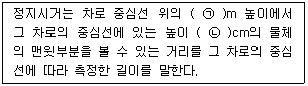
- ㉠ 1, ㉡ 10
- ㉠ 1, ㉡ 15
- ㉠ 100, ㉡ 15
- ㉠ 100, ㉡ 12
(정답률: 80%)
42. 도로의 계획목표연도와 관련하여 아래의 ( )에 들어갈 말이 옳은 것은?
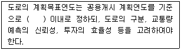
- 20년
- 15년
- 10년
- 5년
(정답률: 62%)
43. 평면교차와 그 접속기준이 틀린 것은?
- 교차하는 도로의 교차각은 직각에 가깝게 하여야한다.
- 교차로의 종단경사는 10% 이하이어야 한다.
- 평면으로 교차하거나 접속하는 구간에는 필요에 따라 도류화시설을 설치하여야 한다.
- 교차로에서 자회전차로가 필요한 경우에는 직진차로와 분리하여 설치하여야 한다.
(정답률: 69%)
44. 입체교차에 대한 기준으로 틀린 것은?
- 도로와 철도의 교차는 입체교차를 원칙으로 한다.
- 고속도로의 기능을 가진 도로가 다른 도로와 교차하는 경우 그 교차로는 입체교차로 하여야 한다.
- 주간선도로의 기능을 가진 도로가 다른 도로와 교차하는 경우 그 교차로는 입체교차로 하여야 한다.
- 부득이하다고 인정되어 도로와 철도가 평면교차하는 경우 교차각은 30도 이상으로 하여야 한다.
(정답률: 73%)
45. 운전자의 시선을 유도하고 옆 부분의 여유를 확보하기 위하여 중앙분리대 또는 길어깨에 차도와 동일한 횡단경사와 구조로 차도에 접속하여 설치하는 부분은?
- 측대
- 교통섬
- 분리대
- 연결로
(정답률: 75%)
46. 주도로 및 부도로의 접근로 차로 수가 각각 2 이상일 때, 교통신호기를 설치하는 차량 교통량 기준이 옳은 것은? (단, 평일 교통량이 기준을 초과하는 시간이 8시간 이상(연속적 8시간이 아니어도 됨)이라고 본다.)
- 주도로 교통량(양방향) 400대/시간 부도로 교통량(교통량이 많은 쪽) 150대/시간
- 주도로 교통량(양방향) 600대/시간 부도로 교통량(교통량이 많은 쪽) 200대/시간
- 주도로 교통량(양방향) 800대/시간 부도로 교통량(교통량이 많은 쪽) 250대/시간
- 주도로 교통량(양방향) 1000대/시간 부도로 교통량(교통량이 많은 쪽) 300대/시간
(정답률: 58%)
47. 도로가 제공하는 2가지 기능이 배분과 도로 기능에 따라 도로를 구분한 아래에서 A, B에 들어갈 내용이 모두 옳은 것은?
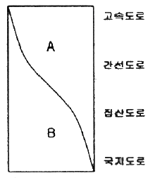
- A-접근성, B-이동성
- A-이동성, B-접근성
- A-효율성, B-이동성
- A-접근성, B-효율성
(정답률: 82%)
48. 평지인 도로를 100km/h로 주행하던 자동차가 장애물을 보고 정지할 수 있는 최소정지거리는? (단, 마찰계수 0.30, 인지반응시간 2.5초다.)
- 약 120.8m
- 약 160.5m
- 약 200.7m
- 약 240.2m
(정답률: 56%)
49. 다음과 같은 특징을 갖는 시거는?
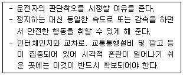
- 종단시거
- 앞지르기시거
- 피주시거
- 평면시거
(정답률: 74%)
50. 주간선도로의 설계기준자동차로 옳은 것은?
- 승용자동차
- 소형자동차
- 대형자동차
- 세미트레일러
(정답률: 71%)
51. 주차장에 대한 설명 중 옳은 것은?
- 공간을 효과적으로 이용하고 질서있는 주차를 위해 모든 주차장의 주차단위구획에 대하여 소형자동차를 설계기준자동차로 사용한다.
- 평행주차는 차로의 진행방향과 각도를 이루고 주차 하는 것을 말한다.
- 30° 전진주차는 차로 진행방향으로 긴 주차폭이 필요하며 1대당 주차 소요면적이 크다.
- 전진주차는 주차 시에 다소 시간이 소요되나 나올 때는 차로의 투시와 관련된 위험이 적어 바로 나올 수있다.
(정답률: 67%)
52. 도로 및 교통조건이 아래와 같을 때 필요한 차로 수는?
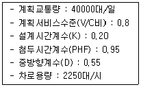
- 양방향 2차로
- 양방향 6차로
- 양방향 8차로
- 양방향 10차로
(정답률: 70%)
53. 인터체인지 설계시 입체교차 구조물이 반드시 필요한 연결로 형식은?
- 우직결 연결로
- 준직결 연결로
- 좌직결 연결로
- 루프 연결로
(정답률: 76%)
54. 도로의 각종 시설 기준이 틀린 것은?
- 도시지역 고속도로 차로의 폭은 3.5m 이상으로 한다.
- 도시지역 일반도로의 중앙분리대의 최소 폭은 1.0m 이다.
- 보도의 유효 폭은 최소 1.0m로 한다.
- 도시지역 고속도로의 차도 오른쪽 길어깨의 최소 폭은 2.00m이다.
(정답률: 65%)
55. 도로의 구조 ㆍ 시설 기준에 관한 규칙상 설계속도가 100km/h이고 적용 최대 편경사가 6%인 차도의 평면곡선반 지름은 최소 얼마 이상으로 하여야 하는가?
- 530m
- 460m
- 440m
- 420m
(정답률: 43%)
56. 설계속도가 50km/h, 편경사가 0.06, 횡방향 미끄럼 마찰계수가 0.2 인 경우, 최소 곡선반경은 얼마이어야 하는가?
- 약 46m
- 약 56m
- 약 66m
- 약 76m
(정답률: 64%)
57. 설계시간교통량(K30)의 일반적인 특징으로 틀린 것은?
- 연평균 일교통량의 증가와 함께 그 대상도로 구간의 K30은 일반적으로 감소한다.
- K30이 높을수록 교통량의 변화가 심하다.
- 대상도로 구간 인접지역의 개발이 많이 이루어질수록 K30은 증가한다.
- K30은 일반적으로 관광도로에서 가장 높은 값을 나타내며 지방지역도로, 도시외곽도로, 도시내 도로 순으로 낮은 값을 갖는다.
(정답률: 57%)
58. 아래의 ㉠과 ㉡에 들어갈 말이 모두 옳은 것은?
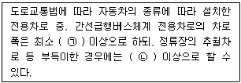
- ㉠ 3.50m, ㉡ 3.25m
- ㉠ 3.50m, ㉡ 3.00m
- ㉠ 3.25m, ㉡ 3.00m
- ㉠ 3.25m, ㉡ 2.75m
(정답률: 55%)
59. 도로의 부대시설에 대한 설명이 틀린 것은?
- 방음시설 중 방음벽은 음향성능상의 원리에 따라 일반적으로 반사형과 흡음형으로 구분할 수 있다.
- 생태통로는 도로건설에 따른 야생동물의 서식지 단절로 인한 영향을 최소화하기 위해 설치하는 환경영향 저감 시설이다.
- 공동구 내 통로는 높이 2.1m 이상, 너비 0.8m 이상을 기준으로 한다.
- 방풍시설은 파랑에 의한 침식, 세굴을 방지하기 위해서 설치한다.
(정답률: 74%)
60. 지방지역 고속도로 중앙분리대의 최소 폭 기준은?
- 1.0m 이상
- 1.5m 이상
- 2.0m 이상
- 3.0m 이상
(정답률: 52%)
4과목: 도시계획개론
61. 건폐율에 대한 설명으로 틀린 것은?
- 대지면적에 대한 건축면적의 비율을 의미한다.
- 대지에 둘 이상의 건축물이 있는 경우에는 이들 중 큰 규모의 건축물의 건축면적을 적용한다.
- 건폐율 적용의 최대한도는 국토의 계획 및 이용에 관한 법률에서 정한 기준에 따른다.
- 거주환경의 쾌적성과 안전성 등의 확보를 위한 공지의 조성이 목적이다.
(정답률: 62%)
62. 다음 중 주로 도시내부의 공간 구조 형성을 설명하는 이론이 아닌 것은?
- 다핵 이론
- 중심지 이론
- 동심원 이론
- 선형 이론
(정답률: 50%)
63. 도시공원 및 녹지 등에 관한 법률상 생활권공원에 해당하지 않는 것은?
- 소공원
- 근린공원
- 어린이공원
- 묘지공원
(정답률: 50%)
64. 다음 중 용도지구의 종류가 아닌 것은?
- 미관지구
- 고도지구
- 보존지구
- 재개발지구
(정답률: 57%)
65. 도시조사분석방법론에 대한 설명으로 틀린 것은?
- 상관분석이란 상관계수를 이용하여 두 변수의 관계가 얼마나 밀접한가를 측정하는 방법이다.
- 회귀분석이란 독립변수와 종속변수 사이의 선형관계를 구하는 방법이다.
- 추정된 회귀분석모형은 미래예측에 활용할 수 있다.
- 다중선형회귀분석이란 하나의 종속변수와 하나의 독립변수 사이의 선형관계를 구하는 방법이다.
(정답률: 60%)
66. 도시개발 패러다임과 그 내용의 연결이 옳은 것은?
- 어반 빌리지 - 교외화 현상이 시작되기 이전의 인간적인 척도를 지닌 근린주구가 중심인 도시로 회귀하고자 하는 방법으로, 1980년대 미국과 캐나다에서 시작되었다.
- 뉴어바니즘 - 교외지역 주거지를 저밀도로 확산시키고 기존의 도시 또는 신도시지역을 고밀도로 개발하는 방식이다.
- 스마트 성장 - 2차 세계대전이후 교외화로 인한 스프롤 현상을 치유하기 위해 시작된 도시운동이다.
- 컴팩트시티 - 쾌적하고 인간적인 스케일의 도시환경계획을 목표로 1960년대 영국에서 시작된 개발 방식이다.
(정답률: 56%)
67. 도시를 구성하는 3대 요소에 해당하지 않는 것은?
- 통신
- 시민
- 토지
- 시설
(정답률: 67%)
68. 도시의 근린생활권 중 공간적 범위가 가장 작은 단위는?
- 인보구
- 근린분구
- 근린주구
- 근린지구
(정답률: 59%)
69. 국토해양부장관이 도시의 무질서한 확산을 방지하고 도시주변의 자연환경을 보전하여 도시민의 건전한 생활환경을 확보하기 위하여 도시의 개발을 제한할 필요가 있다고 인정되어 도시 ㆍ 군관리계획으로 결정하는 것은?
- 특정시설제한구역
- 개발제한구역
- 도시자연공원구역
- 시가화조정구역
(정답률: 62%)
70. 녹지의 유형 중, 대기오염, 소음, 진동, 악취, 그밖에 이에 준하는 공해와 각종 사고나 자연재해, 그 밖에 이에 준하는 재해 등의 방지를 위하여 설치하는 것은?
- 완충녹지
- 경관녹지
- 연결녹지
- 방재녹지
(정답률: 70%)
71. 수도권정비계획법상의 권역 구분에 해당하지 않는 것은?
- 과밀억제권역
- 개발유보권역
- 성장관리권역
- 자연보전권역
(정답률: 36%)
72. 다음 중 도시 ㆍ 군관리계획의 내용에 해당하지 않는 것은?
- 용도지역 ㆍ 용도지구의 지정에 관한 계획
- 국토의 현황 및 여건 변화 전망에 관한 계획
- 기반시설의 설치 ㆍ 정비 또는 개량에 관한 계획
- 도시개발사업이나 정비사업에 관한 계획
(정답률: 53%)
73. 샤핀(F. S. Chapin)이 주장한 토지 이용 결정 요인 분류에 해당하지 않는 것은?
- 정치적 요인
- 사회적 요인
- 경제적 요인
- 공공의 이익
(정답률: 53%)
74. 공원 ㆍ 녹지체계의 유형 중 단지 내 녹지를 한 곳으로 모으는 경우로, 녹지가 대형화됨으로써 생태적으로는 안정성이 높아지나 녹지로의 도달거리가 길어져 접근성이 낮아질 수 있는 것은?
- 집중형(集中形)
- 분산형(分散形)
- 대상형(帶狀形)
- 격자형(格子形)
(정답률: 45%)
75. 하워드(E.Howard)가 제시한 전원도시의 계획 내용에 해당하지 않는 것은?
- 마천루를 중심으로 하는 도시
- 전원도시 주변에 충분한 농업지대가 존재
- 개발이익의 사회 환수
- 계획인구의 제한
(정답률: 53%)
76. 도시 및 지역경제 분석 방법 중 하나로, 지역산업의 변화를 내적요인과 외적요인에 해당하는 국가전체의 성장요인(national share), 산업구조적 요인(industry mix), 지역의 경쟁력 요인(local factor)으로 나누어 파악하고, 이를 통해 지역의 산업성장을 분석하는 방법은?
- 변이할당모형
- 경제기반모형
- 투입산출모형
- 다중회귀모형
(정답률: 52%)
77. 도시개발정책 중 성장관리(growth management)의 목적이 아닌 것은?
- 도시의 외연적 확산 방지
- 도시 주변 자연환경의 보존
- 도시내 개발격차의 시정
- 도시 성장률의 단일화
(정답률: 66%)
78. 다음 중 격자형 도로망으로 된 대표도시는?
- 뉴욕
- 도쿄
- 파리
- 모스크바
(정답률: 71%)
79. 도시토지이용의 예측 모형인 라우리모형(Lowry Model)에서 공간구조를 분류하는 항목에 해당하지 않는 것은?
- 기반부문(Basic Sector)
- 서비스부문(Service Sector)
- 가계부문(Household Sector)
- 환경부문(Environmental Sector)
(정답률: 50%)
80. 도시 ㆍ 군계획시설로서 도로의 기능별 구분에 따라 주간선 도로와 주간선도로의 일반적인 배치간격 기준은?
- 100m 내외
- 250m 내외
- 500m 내외
- 1000m 내외
(정답률: 72%)
5과목: 교통관계법규
81. 도로 구조의 손궤 방지, 미관 보존 또는 교통에 대한 위험을 방지하기 위하여 도로경계선으로부터 20m를 초과하지 아니하는 범위에서 대통령령으로 정하는 바에 따라 관리청이 지정할 수 있는 것은?
- 접도구역
- 연도구역
- 보존구역
- 풍치구역
(정답률: 62%)
82. 용도지구에 대한 설명이 틀린 것은?
- 경관지구는 경관을 보호 ㆍ 형성하기 위하여 필요한 지구이다.
- 방재지구는 풍수해, 산사태, 지반의 붕괴, 그 밖의 재해를 예방하기 위하여 필요한 지구이다.
- 취락지구는 주거기능, 상업기능을 집중적으로 개발ㆍ 정비할 필요가 있는 지구이다.
- 시설보호지구는 학교시설 ㆍ 공용시설 ㆍ 항만 또는 공항의 보호, 업무기능의 효율화, 항공기의 안전운항 등을 위하여 필요한 지구이다.
(정답률: 62%)
83. 도시교통정비촉진법에 따른 교통수요관리의 시행 내용에 해당하지 않는 것은?
- 승용차부제에 관한 사항
- 혼잡통행료의 부과 ㆍ 징수에 관한 사항
- 자동차의 운행제한에 관한 사항
- 광역교통시설부담금에 관한 사항
(정답률: 65%)
84. 도시교통정비 기본계획, 중기계획, 연차별 시행계획의 수립주기가 모두 옳은 것은?
- 20년 - 10년 - 5년
- 20년 - 10년 - 1년
- 15년 - 10년 - 5년
- 10년 - 5년 - 1년
(정답률: 49%)
85. 도로교통법규상 신호등의 등화의 밝기는 낮에 몇m 앞쪽에서 식별할 수 있는 성능을 가진 것이어야 하는가?
- 150m
- 100m
- 50m
- 30m
(정답률: 54%)
86. 도로법에 규정된 도로의 종류에 해당하지 않는 것은?
- 고속국도
- 일반국도
- 농 ㆍ 어촌도로
- 군도
(정답률: 63%)
87. 주차장법상 부설주차장의 설치의무를 면제받으려는 자가 시장 ㆍ 군수 또는 구청장에게 제출하여야 하는 주차장 설치의무 면제신청서의 기재사항이 아닌 것은?
- 주차장 관리자의 성명 및 주소
- 시설물의 위치 ㆍ 용도 및 규모
- 신청인의 성명 및 주소
- 설치하여야 할 부설주차장의 규모
(정답률: 66%)
88. 다음 중 교통영향분석 ㆍ 개선대책을 수립하지 아니할 수 있는 사업이 아닌 것은?
- 국방부장관이 군사상의 기밀보호가 필요하거나 군사작전의 긴급한 수행을 위하여 필요하다고 인정하여 국토해양부장관의 협의한 사업
- 국가정보원장이 국가안보를 위하여 필요하다고 인정하여 국토해양부장관과 협의한 사업
- 「재난 및 안전 관리기본법」 제37조에 따른 응급 조치를 위한 사업
- 「연구개발특구 등의 육성에 관한 특별법」제6조의2제2항제4호에 따른 특구개발사업
(정답률: 43%)
89. 다음 중 도로의 점용에 관한 설명으로 옳지 않은 것은?(단, 도로의 점용이 도로의 굴착을 수반하는 경우에 한 하며 주요지하매설물을 설치하는 공사의 경우는 고려하지 않는다.)
- 신청인이 주요지하매설물의 관리자인 경우, 허가신청서에 주요지하매설물의 사후관리계획에 관한 서류를 첨부하여야 한다.
- 관련 규정에 따른 도로관리심의회의 심의 ㆍ 조정의 결과를 반영한 안전대책 등에 관한 서류를 첨부하여야 한다.
- 도로 점용의 허가를 받은 자는 공사기간 중에 사람들이 보기 쉬운 장소에 그 허가내용을 내걸어야 한다.
- 공사를 마친 때에는 시 ㆍ 도의 조례로 정하는 바에 따라 준공도면을 관리청에 제출하고 확인을 받아야 한다.
(정답률: 60%)
90. 도시 ㆍ 군계획 수립 대상지역의 일부에 대하여 토지 이용을 합리화하고 그 기능을 증진시키며 미관을 개선하고 양호한 환경을 확보하며, 그 지역을 체계적 ㆍ계획적으로 관리하기 위하여 수립하는 도시 ㆍ 군관리계획은?
- 광역도시계획
- 지구단위계획
- 용도지역
- 기반시설부담구역
(정답률: 63%)
91. 도로교통법상 안전지대에 관한 정의가 옳은 것은?
- 도로를 횡단하는 보행자나 통행하는 치마의 안전을 위하여 안전표지나 이와 비슷한 인공구조물로 표시한 도로의 부분이다.
- 연석선, 안전표지 또는 그와 비슷한 인공구조물을 이용하여 경계를 표시하여 모든 차가 통행할 수 있도록 설치된 도로의 부분이다.
- 차마가 한 줄로 도로의 정하여진 부분을 통행하도록 차선으로 구분한 차도의 부분이다.
- 지체부자유자의 휴식공간을 위하여 설치한 도로의 부분이다.
(정답률: 62%)
92. 도로교통법상 모든 차의 운전자가 지켜야 할 보행자의 보호와 거리가 먼 것은?
- 모든 차의 운전자는 보행자가 횡단보도를 통행하고 있는 때에는 그 횡단보도 앞(정시선이 설치되어 있는 곳에서는 그 정지선을 말한다)에서 보행자의 횡단을 방해하거나 위험을 주지 않으면 반드시 일시정지하지 않아도 된다.
- 모든 차의 운전자는 교통정리를 하고 있는 교차로에서 좌회전이나 우회전을 하려는 경우에 신호기 또는 경찰 공무원등의 신호나 지시에 따라 도로를 횡단하는 보행자의 통행을 방해하여서는 아니된다.
- 모든 차의 운전자는 교통정리를 하고 있지 아니하는 교차로 또는 그 부근의 도로를 횡단하는 보행자의 통행을 방해하여서는 아니된다.
- 모든 차의 운전자는 도로에 설치된 안전지대에 보행자가 있는 경우와 차로가 설치되지 아니한 좁은 도로에서 보행자의 옆을 지나는 경우에는 안전한 거리를 두고 서행하여야 한다.
(정답률: 64%)
93. 주차장법상 도로의 노면 및 교통광장 외의 장소에 설치된 주차장으로서 일반의 이용에 제공되는 것은?
- 노상주차장
- 부설주차장
- 노외주차장
- 전용주차장
(정답률: 66%)
94. 도로에서 일어나는 교통상의 모든 위험과 장해를 방지하고 제거하여 안전하고 원활한 교통을 확보함을 목적으로 제정된 것은?
- 교통안전법
- 도로법
- 도시교통정비촉진법
- 도로교통법
(정답률: 44%)
95. 다음 중 도로법상 도로의 부속물에 해당하지 않는 것은?
- 도로원표
- 도로의 가로등
- 이정표
- 궤도
(정답률: 56%)
96. 주차자의 주차단위구획 기준이 틀린 것은? (단, 평행주차형식 외의 경우다.)(2018년 03월 21일 개정된 규정 적용됨)
- 경형 : 너비 2.0m 이상, 길이 3.6m 이상
- 일반형 : 너비 2.5m 이상, 길이 5.0m 이상
- 확장형 : 너비 2.6m 이상, 길이 5.2m 이상
- 장애인전용 : 너비 3.3m 이상, 길이 6.0m 이상
(정답률: 60%)
97. 도로법상 타공사나 타행위로 인하여 필요하게 된 도로공사의 비용을 타공사나 타행위의 비용을 부담하여야 할 자에게 그 전부 또는 일부를 부담시키는 것을 무엇이라 하는가?
- 수익자부담금
- 이용자부담금
- 원인자부담금
- 손궤자부담금
(정답률: 74%)
98. 교통안전법에 따른 지역교통안전기본계획에 대한 내용 중 ( )안에 들어갈 말이 모두 옳은 것은?
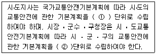
- ① 5년, ② 5년
- ① 5년, ② 10년
- ① 10년, ② 5년
- ① 10년, ② 10년
(정답률: 39%)
99. 교통안전법령에 따른 대통령령이 정하는 교통안전관련 공공기관(특별교통안전진단기관)은?
- 경찰청
- 도로교통공단
- 시설물관리공단
- 국토해양부
(정답률: 66%)
100. 도로교통법에 따른 보행자의 도로의 횡단에 대한 설명이 틀린 것은?
- 보행자는 횡단보도, 지하도, 육교나 그 밖의 도로횡단시설이 설치되어 있는 도로에서는 그 곳으로 횡단하여야 한다.
- 지하도나 육교 등의 도로횡단시설을 이용할 수 없는 지체 장애인의 경우에는 다른 교통에 방해가 되지 아니하는 방법으로 도로 횡단시설을 이용하지 아니하고 도로를 횡단할 수 있다.
- 보행자는 횡단보도가 설치되어 있지 아니한 도로에서는 가장 긴 거리로 천천히 횡단하여야 한다.
- 보행자는 모든 차의 바로 앞이나 뒤로 횡단하여서는 아니된다. 다만, 횡단보도를 횡단하거나 신호기 또는 경찰 공무원 등의 신호나 지시에 따라 도로를 횡단하는 경우에는 그러하지 아니하다.
(정답률: 61%)
6과목: 교통안전
101. 도로의 곡선부에서 원심력을 상쇄하기 위해 편경사를 설치한 것 중 옳은 것은? (단, +는 횡단경사를 높인 부분이고, -는 낮춘 부분을 의미한다.)
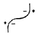
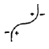
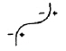
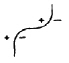
(정답률: 80%)
102. 교차로의 교통사고 원인 분석 결과 신호등의 부적절한 운영이 원인으로 판단되었을 때 이를 수정하기 위한 신호등의 운영요소에 해당되지 않는 것은?
- 신호주기
- 신호현시
- 신호등 색상
- 녹색시간
(정답률: 60%)
103. A, B, C 세 지점에서 발생한 피해 등급별 사고건수가 아래와 같을 때, 이를 분석한 내용이 틀린 것은? (단, 각 피해 등급별 사고 심각도의 가중치는 사망사고가 12, 중상사고 6, 경상사고 3, 대물사고 1 이다.)
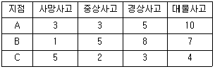
- 사고건수법 적용 시 A지점과 B지점은 동일한 위험도 순위를 가진다.
- 사고심각도법 적용 시 세 지점의 위험도는 A ＞ C ＞ B의 순서로 나타난다.
- 일반적으로 사고심감도법의 경우 사망사고의 건수가 위험도 순위에 가장 큰 영향을 미친다.
- 각 피해 등급에 부여되는 심각도 가중치가 변경되면 지점 간 사고심각도법에 의한 순위가 달라질 수 있다.
(정답률: 73%)
104. 연평균 25건의 사고가 발생하고 일교통량이 1000대인 도로의 한 구간에 예상사고감소율이 20%인 안전조치를 취할 경우 장래의 연평균감소건수는? (단, 장래 분석 기간 동안의 평균일교통량은 1300대다.)
- 5.4 건
- 6.5 건
- 7.6 건
- 8.7 건
(정답률: 53%)
1⑤. 도로 주행시 노면과 타이어 사이에 얇은 수막이 생겨 브레이크 기능을 상실하게 하는 현상은?
- Wet Fading
- Standing Wave
- Hydro Planing
- Morning Effect
(정답률: 74%)
106. 다음 중 교통사고를 줄이기 위한 3E의 규제(Enforcement)에 해당하는 것은?
- 속도제한의 실시
- 사고다발지점의 개선
- 안전한 도로의 설계
- 사고다발자 및 법규위반자 교육
(정답률: 58%)
107. 보행자의 안전한 차도부 횡단을 위해 보행이 빈번한 지점에 설치하는 시설물인 보행횡단보도 중 2단형 횡단보도로서 차도 중앙에 교통섬이 있는 형태로 넓은 도로에서 교통처리의 효율 제고를 위해 적용되는 횡단보도는?
- 스크램블(Scrambled) 횡단보도
- 펠리칸(Pellican) 횡단보도
- 투칸(Toucan) 횡단보도
- 스테거드(Staggered) 횡단보도
(정답률: 63%)
108. 어느 차량이 단속적으로 10m에 이어 20m의 스키드마크(skid mark)를 남기고 정지하였다. 도로는 평지이고 타이어와 노면의 마찰계수가 0.8 일 때 이 차량의 초기 속도는?
- 약 68km/시
- 약 78km/시
- 약 88km/시
- 약 98km/시
(정답률: 56%)
109. 피로와 졸음은 안전운전을 위한 운전자의 능력을 감소시킨다. 이에 대한 설명으로 틀린 것은?
- 운전을 시작하여 일정 시간이 지나면 일반적으로 운전자의 능력이 급격히 저하한다.
- 지속적인 차량 운행으로 운전자의 능력은 떨어진다.
- 실제 상황에서 상당한 기간 동안 수면을 취하지 못한 운전자의 능력은 심하게 약화되어 있다.
- 운전자의 휴식으로는 피로의 시작을 지연시킬 수 없다.
(정답률: 80%)
110. 길이가 10km인 도로 구간에서 3년 동안 50건의 교통사고가 발생하였다. 이 도로 구간의 연평균일교통량이 12000대일 때 백만 차량 ㆍ km 당 사고율은 얼마인가?
- 0.38 건
- 0.48 건
- 0.58 건
- 0.68 건
(정답률: 56%)
111. 다음 중 교통사고의 재현에 필요한 자료가 아닌것은?
- 정지 및 미끄럼 흔적
- 회전시의 편주 흔적
- 사고차량의 검사 유무
- 사고차량의 최종 위치
(정답률: 83%)
112. 교통사고의 원인 중 하나인 운전자에 관한 설명이 틀린 것은?
- 운전자는 정보처리과정에서 단지 수동적 요소다.
- 운전자는 자신의 선택에 의하여 운전의 스트레스를 감소 또는 증가시키기도 한다.
- 운전자에 대한 환경적 요구는 시간에 따라 변한다.
- 운전자의 운전능력은 시간에 따라 변한다.
(정답률: 78%)
113. 다음 중 사고전이현상(accident migration)에 대한 설명으로 옳은 것은?
- 어느 지점에서의 교통안전개선 기법 적용이 인접한 다른 곳의 사고를 오히려 증가시키는 현상을 말한다.
- 어느 지점 개선사업의 효과가 운전자의 위험 보정에 의해 상쇄되는 영향을 말한다.
- 어느 지역의 평균 교통사고율을 이용하여 도로조건이 유사한 다른 지역에서의 사고율을 파악할 수 있다는 이론을 말한다.
- 어느 위험한 운전자가 주행 중 연쇄적으로 사고를 초래하는 현상을 말한다.
(정답률: 74%)
114. 다음 중 방호울타리의 기능이 아닌 것은?
- 보행자 또는 도로변의 주요 시설을 안전하게 보호한다.
- 운전자의 시선을 유도한다.
- 충돌한 차를 정상적인 진행 방향으로 복귀시킨다.
- 도로 끝 및 도로 선형을 명시한다.
(정답률: 62%)
115. 교통사고의 유발 요인을 인적요인, 차량요인, 환경적 요인으로 분류할 때, 다음 중 인적요인(人的要因)과 가장 거리가 먼 것은?
- 운전자의 능력
- 운전자의 운전습관
- 운전자의 가족관계
- 운전자의 생리적 조건
(정답률: 80%)
116. 화살표와 기호로 사고에 관련된 차량이나 보행자의 경로, 사고의 유형 및 정도를 도식적으로 나타내는 것은?
- 사고지점도
- 충돌도
- 로드맵
- 현황도
(정답률: 60%)
117. 사고위험지역 선정시 교통량이 적은 지방부 도로에 효과적이지만 교통량 수준에 따른 요인은 고려하지 않는 단점이 있는 방법은?
- 사고건수법
- 사고율법
- 사고건수-율법
- 율-품질관리법
(정답률: 77%)
118. 교차로의 시거불량이 사고원인인 지점의 개선 대책으로 적합하지 않은 것은?
- 시야 장애물 제거
- 예고표지 설치
- 시선유도표지 설치
- 미끄럼방지 포장
(정답률: 75%)
119. 교통사고 조사의 공학적 목적으로 거리가 먼 것은?
- 교통사고에 대한 책임 규명
- 교통안전대책 수립을 위한 기초자료 활용
- 교통운영의 효율화
- 교통사고의 정확한 원인규명으로 사고 방지대책 강구
(정답률: 70%)
120. 편주흔(yaw mark)을 이용한 차량의 제동시 속도 추정 공식에서 이용하는 요소가 아닌 것은?
- 경사
- 타이어와 노면의 마찰계수
- 사고차량의 중량
- 편주흔의 곡선 반경
(정답률: 75%)